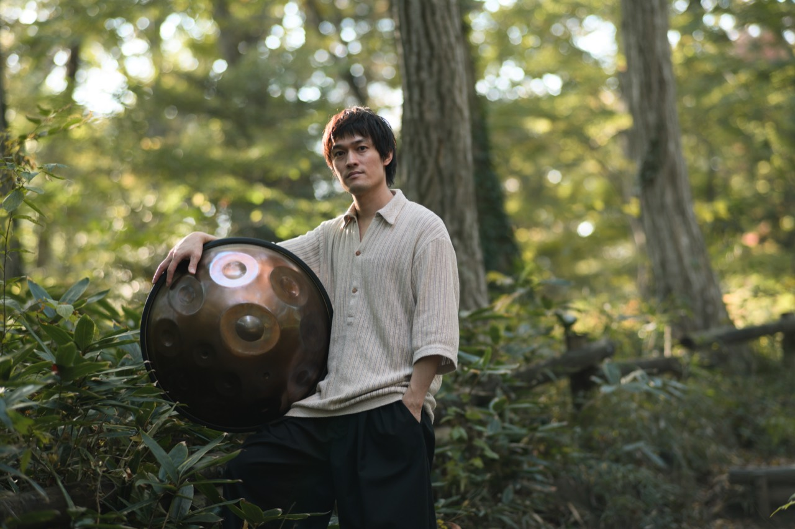

Shimo / 下村 裕
Yutaka ShimomuraTHREE1989（スリー）のメンバーとしてキーボードを担当。ピアノ・ギター・ドラムと様々な楽器を演奏できる能力を活かし、楽曲面では主に編曲を担当している。
個人的にヒーリング系・アンビエントのミュージックを好み、ハンドパンの不思議な音に魅了され2022年から始める。自身のテーマは「温もりのある安らかな音楽」で「自然との調和」を目的とし、音楽の表現の幅を広げ活動している。
トップページへ戻る
THREE1989（スリー）のメンバーとしてキーボードを担当。ピアノ・ギター・ドラムと様々な楽器を演奏できる能力を活かし、楽曲面では主に編曲を担当している。
個人的にヒーリング系・アンビエントのミュージックを好み、ハンドパンの不思議な音に魅了され2022年から始める。自身のテーマは「温もりのある安らかな音楽」で「自然との調和」を目的とし、音楽の表現の幅を広げ活動している。
トップページへ戻る